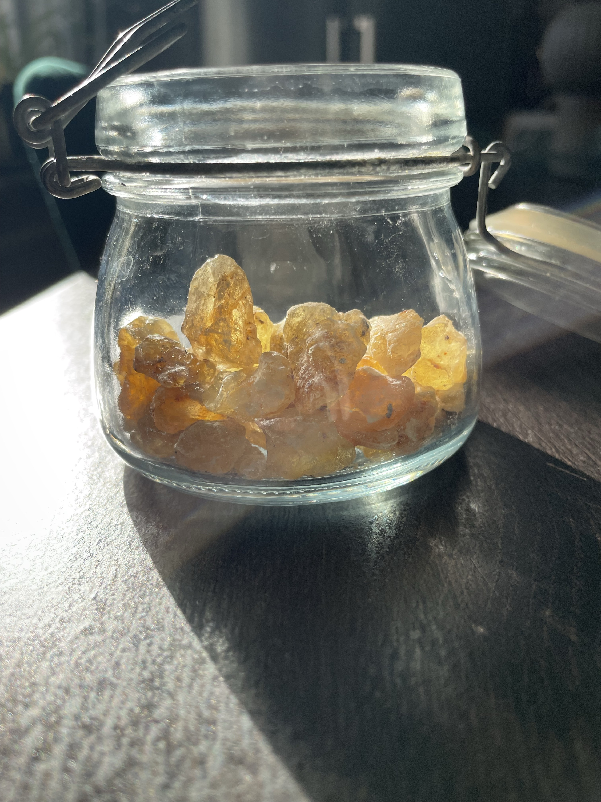

Grade 2 — Premium
Golden, semi-translucent tears with a sweet citrus profile. Ideal for premium incense and extraction.
Family-based exporter · Office in Sweden · Export from Somalia (FOB Berbera)
Golden, semi-translucent tears with a sweet citrus profile. Ideal for premium incense and extraction.
Smaller granules with a clean, balanced aroma. Reliable for incense and essential oil extraction.
Our highest quality: large, bright tears with a citrus-honey top note, hand-picked from the first tapping.
Boswellia Frereana, known locally as Maydi, grows only in the rugged mountains of northern Somaliland, where the dry winds from the Gulf of Aden meet the red desert soil. This unique micro-climate cannot be replicated anywhere else in the world, which gives the resin its distinctive aroma and purity.
Unlike other frankincense species, Maydi produces a sweet citrus-honey scent and contains natural anti-inflammatory compounds valued for centuries in both traditional medicine and modern wellness. Its resin is used to ease stress, improve focus, support skin health, and enhance breathing through natural aromatherapy.
At Somora Frankincense, this is more than a product. It represents the essence of a region, harvested by families whose techniques have been refined through generations.


Please email us with the following details:
Somora Frankincense is a family-based exporter of authentic Somali Maydi (Boswellia Frereana). We maintain a transparent chain with on-camera verification, Batch IDs and a Golden Sample model to guarantee consistency across shipments. Office in Sweden, export handled in Somalia.
Somora Frankincense
Office in Sweden • Export from Somalia